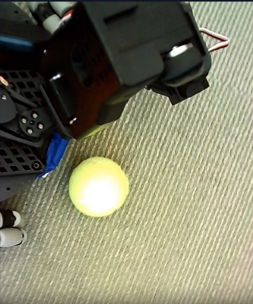

Project Overview
- Taught a robot to play soccer using ACT imitation learning.
- Collected teleoperation data, trained the model in Colab, and packaged the workflow so the datasets and checkpoints could be shared on Hugging Face.
Expanded Details
As our final project for robotics seminar, I chose to build MessiBot, a SO101 robot designed to kick a ball towards a goal. The project was built in collaboration with another team, who used classical control to make a goalkeeper robot. MessiBot was built as a full imitation-learning robotics pipeline, with custom teleoperated recording and inference on a lab machine. I wrote and modified teleoperation scripts so we could record without a leader arm, uploaded the datasets to Hugging Face Hub, and ran inference locally. I then trained the ACT (Action Chunking Transformer) model in a Google Colab notebook on an A100 with 40GB of VRAM.
The final workflow is organized around reproducibility: the trained models, initial dataset, and both finetuning datasets are all hosted on Hugging Face, a long with the intermediate artifacts used during development. That made it easier to iterate on the robot's soccer behavior, test new policies, and keep the project accessible outside of my local environment.
